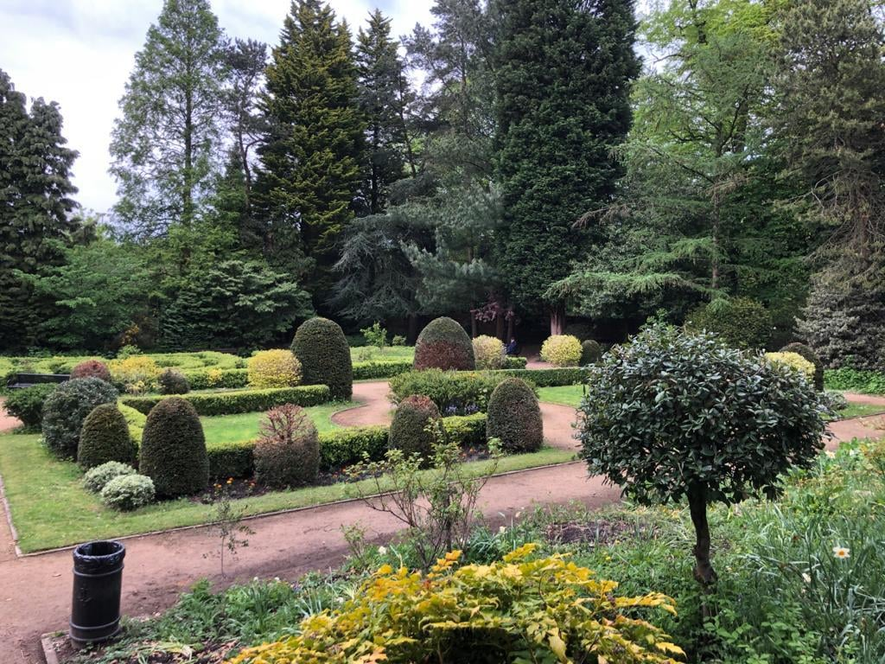
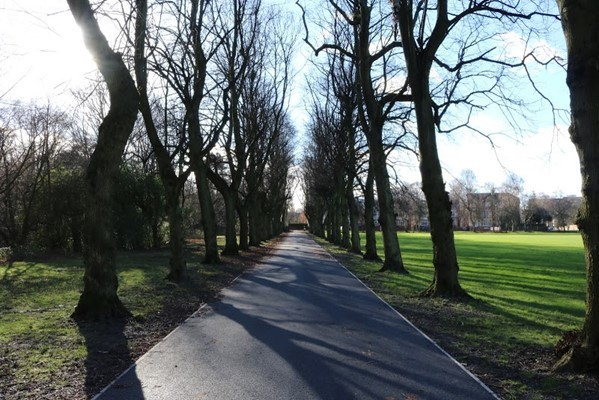
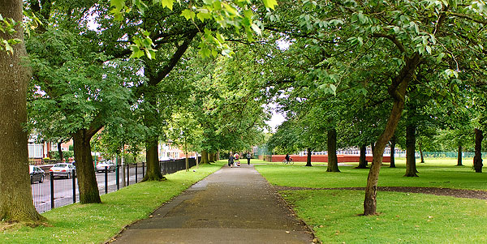

parks in manchester
Welcome to Green is the new black, your ultimate guide to the green spaces and hidden gems nestled within this vibrant city. Whether you're a local resident or a visitor seeking tranquility, our comprehensive website provides detailed insights into Manchester's diverse parks. Discover serene landscapes, bustling playgrounds, scenic walking trails, and historic gardens. From family-friendly activities to peaceful retreats, each park offers a unique experience for all ages. Join us in celebrating the natural beauty of Manchester, and find your perfect spot to unwind and connect with nature.
Platt Fields Park, located in Manchester, is a vibrant and diverse public park offering a wide range of amenities and activities for visitors of all ages. The park features expansive green spaces perfect for picnicking, relaxing, and recreational activities. A highlight is the picturesque boating lake, where visitors can enjoy pedal boating. The park also boasts well-maintained walking and cycling paths, sports facilities including tennis courts and a skate park, and a children's playground. Additionally, Platt Fields Park hosts various community events and festivals throughout the year, fostering a strong sense of community engagement. Its serene ornamental gardens, historic buildings, and rich biodiversity make it a cherished green space in the heart of Manchester.
Birchfields Park, situated in Manchester, is a cherished urban green space known for its serene environment and community-focused amenities. The park offers well-maintained open fields ideal for sports, picnics, and leisurely walks. It features dedicated play areas for children, including modern playground equipment. For fitness enthusiasts, there are outdoor gym facilities and jogging paths. Birchfields Park is also home to beautiful flowerbeds and mature trees, providing a tranquil setting for relaxation and nature appreciation. Throughout the year, the park hosts local events and activities that bring together the community, making it a vital recreational hub in Manchester.
Crowcroft Park, located in Manchester, is a vibrant and well-loved green space that offers a variety of amenities and activities for the local community. The park features expansive lawns and mature trees, creating a peaceful environment perfect for picnicking and relaxation. It boasts a well-equipped children's playground and sports facilities, including a multi-use games area and basketball courts. Crowcroft Park is also home to community gardens, where residents can engage in gardening and enjoy the beauty of seasonal flowers. With its network of walking and cycling paths, the park encourages outdoor exercise and leisurely strolls. Throughout the year, Crowcroft Park hosts community events and activities, making it a lively and essential part of Manchester's recreational landscape.
